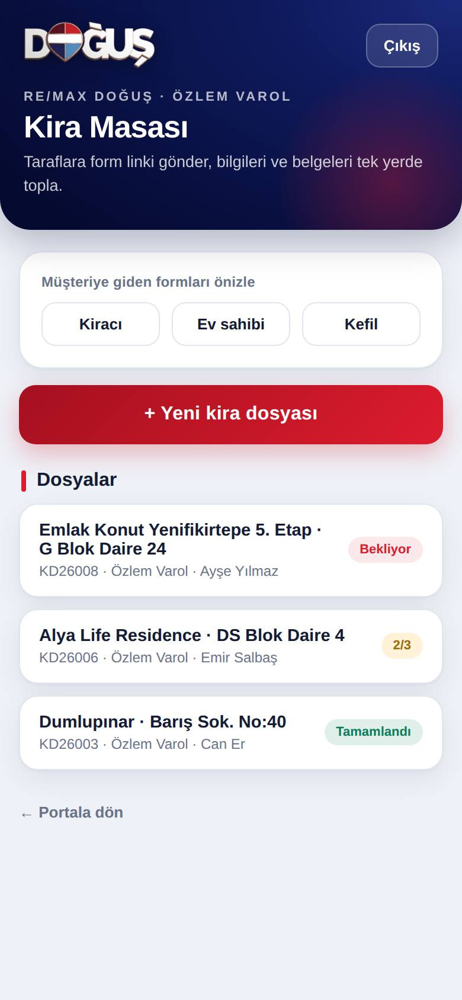
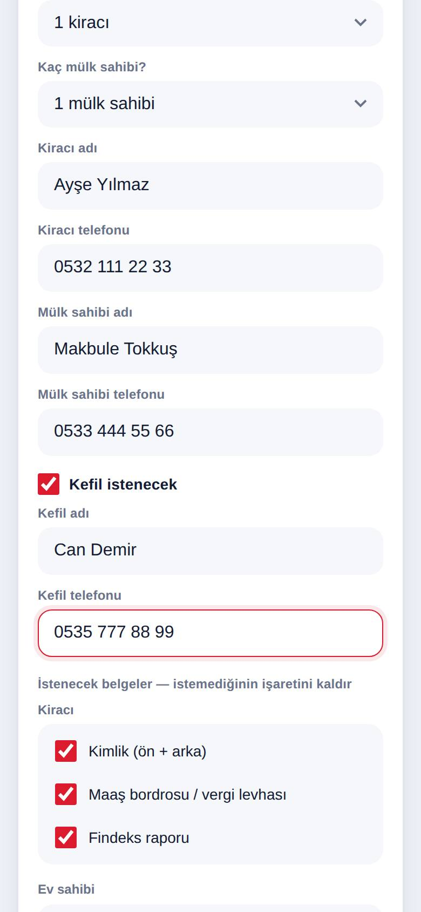
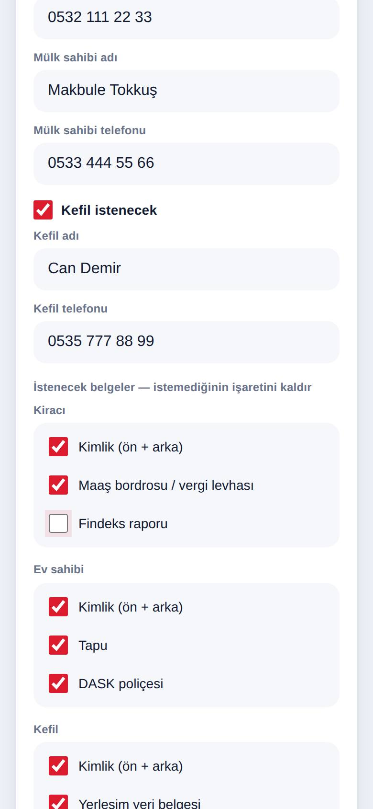
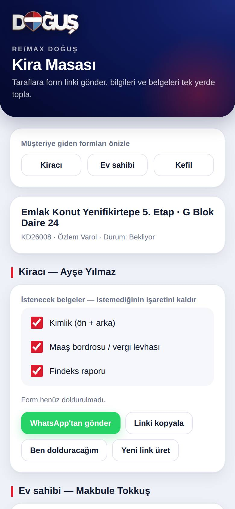
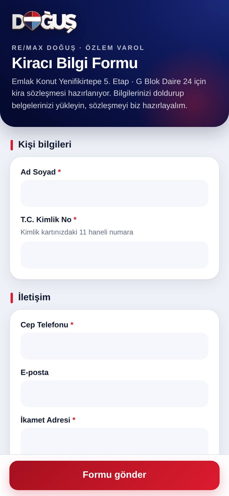
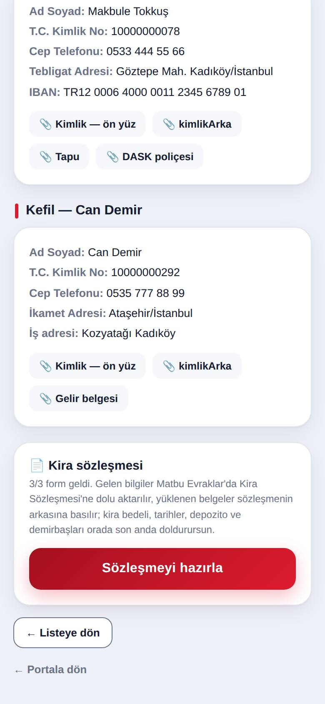
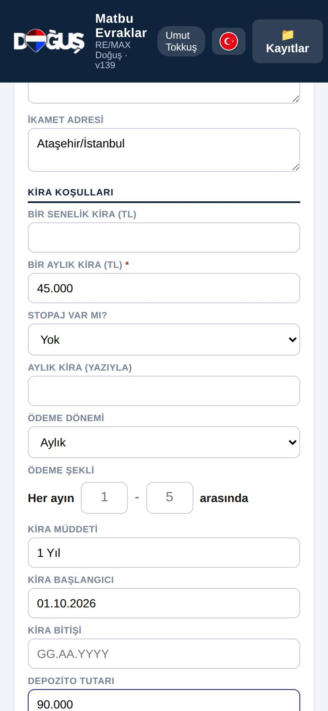
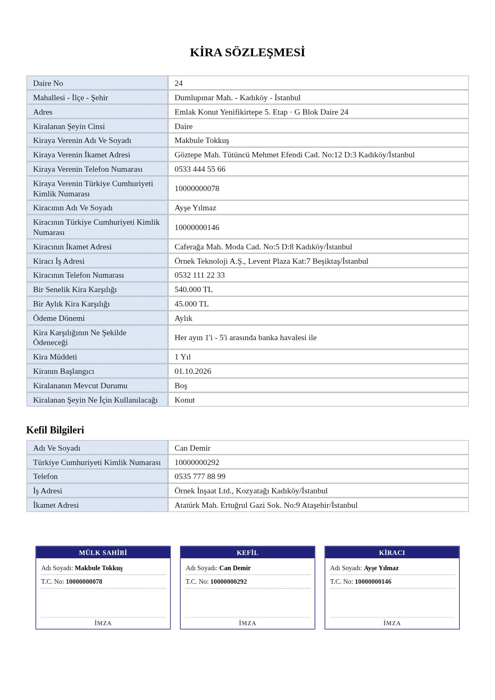
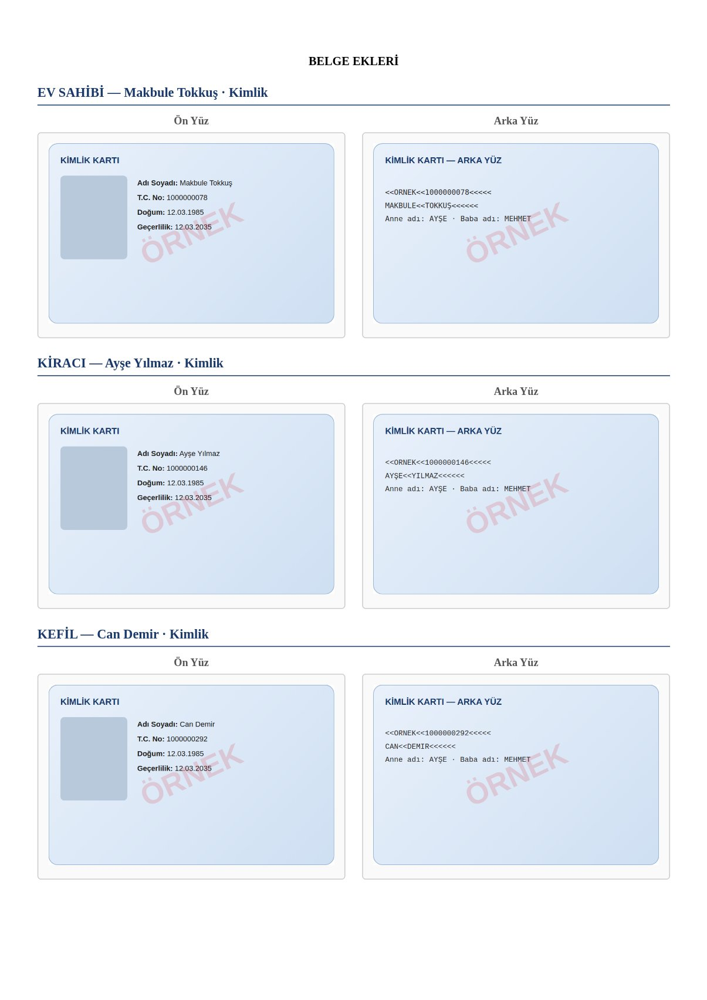
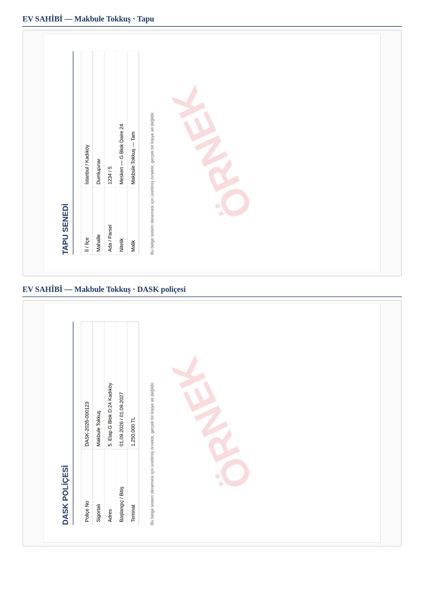

RE/MAX Doğuş · Danışman Rehberi
Kira Masası
Kiracı, ev sahibi ve kefilden bilgileri ve belgeleri telefondan topla; sözleşmeyi tek tuşla dolu hazırla.
Kiracı, ev sahibi ve kefilden bilgileri ve belgeleri telefondan topla; sözleşmeyi tek tuşla dolu hazırla.
Portalda Kira Masası kutusuna dokun. Şifreni gir, listeden adını seç ve Giriş'e bas.
Açılan ekranda senin kira dosyaların ve her birinin durumu görünür: Bekliyor, 1/3 (kaç form geldi) ya da Tamamlandı.

+ Yeni kira dosyası'na bas ve doldur:

Formun altında her kişi için belge listesi var; hepsi işaretli gelir. İstemediğin belgenin işaretini kaldır — müşteri o belgeyi formda hiç görmez.
Sonra Dosyayı aç ve linkleri üret'e bas.

Her kişinin kartında dört düğme var:

Müşteri linki açınca senin adınla hazırlanmış kurumsal bir form görür. Bilgilerini yazar, belgelerini telefonundan yükler.

Her form geldiğinde ofise mail düşer. Kira Masası'nda dosyanın durumu güncellenir; dosyayı açınca gelen bilgileri ve yüklenen belgeleri görürsün.
Formlar gelince dosyanın en altındaki Sözleşmeyi hazırla'ya bas.

Matbu Evraklar'da Kira Sözleşmesi açılır; kiraya veren, kiracı, kefil bilgileri ve IBAN dolu gelir. Senin dolduracakların:

Sözleşme sayfalarının arkasına belge ekleri kendiliğinden eklenir:



Linkler 72 saat geçerli. Dosyayı aç, o kişinin kartında Yeni link üret'e bas ve yeni linki gönder.
Yanındaysan Ben dolduracağım'a bas; formu kendi telefonundan doldur, kimliği kamerayla tara.
Kira Masası'nın en üstünde Müşteriye giden formları önizle var. Kiracı, ev sahibi ve kefil formlarını linksiz açar; hiçbir şey kaydedilmez.
Yeni dosyada "Kaç kiracı? / Kaç mülk sahibi?" ile 3'e kadar seç; herkese ayrı link gider, sözleşmeye hepsi aktarılır.
Belgenin Drive bağlantısında sorun var demektir. Dosyayı Kira Masası'nda açıp belgeyi kontrol et; çözülmezse Umut Tokkuş'a haber ver.
Gitmez. Kira bedeli, tarihler ve depozito korunur; sadece taraf bilgileri ve belgeler güncellenir.